“En otras clínicas me trataba un generalista de todo.”
En Teeth 22: cada tratamiento lo hace el especialista con máster en ese campo: endodoncia, implantes, ortodoncia o periodoncia.
Formación de nuestros doctores
Seamos sinceros
Y cómo lo resolvemos en Teeth 22.
“En otras clínicas me trataba un generalista de todo.”
En Teeth 22: cada tratamiento lo hace el especialista con máster en ese campo: endodoncia, implantes, ortodoncia o periodoncia.
“Mi hijo tiene necesidades especiales y nadie quiere tratarle.”
En Teeth 22: atendemos con experiencia a pacientes con síndrome de Down, autismo y otras necesidades especiales, con calma y respeto.
“No quiero sorpresas en la factura.”
En Teeth 22: tratamos con honradez: plan por escrito, precio cerrado y financiación si la necesitas.
Nuevos pacientes
En Teeth 22 no te ve “el que esté libre”: te ve el especialista de lo tuyo. Sal de la primera cita con un diagnóstico claro y un plan por escrito. Sin coste.
Quedan 12 plazas en este mes
Tu tranquilidad, por escrito
Si lo tuyo es un implante, te lo pone el implantólogo. Si es ortodoncia, la ortodoncista. Sin excepciones.
Presupuesto cerrado por escrito. Si surge algo imprevisto, el sobrecoste lo asumimos nosotros.
En nuestra clínica solo utilizamos implantes Hi Tech de alta gama.
Tratamientos
Odontología multidisciplinar: todas las especialidades coordinadas en un único plan de tratamiento.
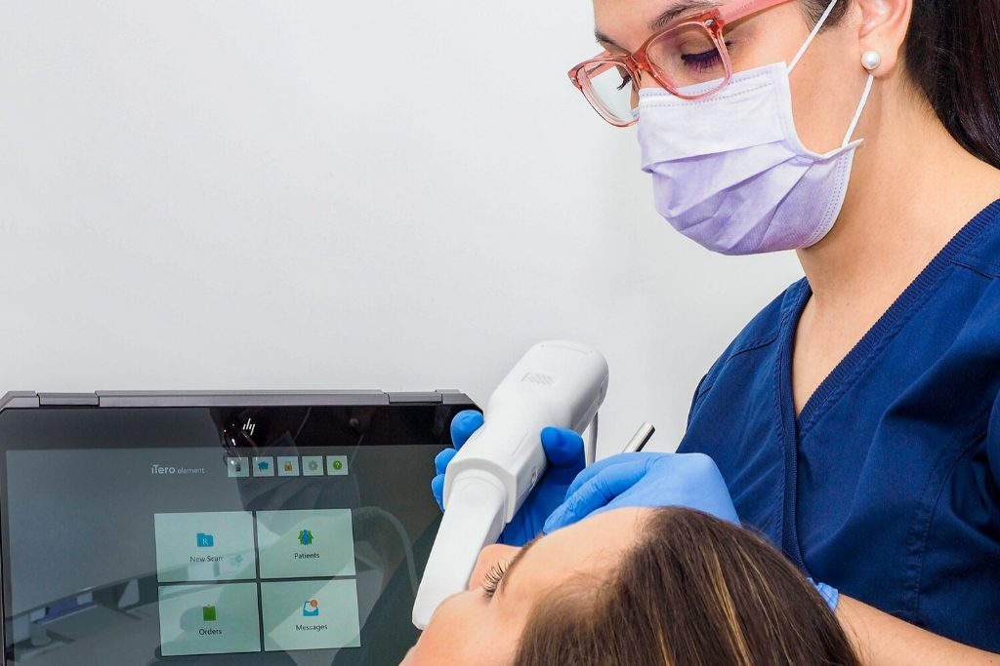
Solo implantes Hi Tech de alta gama, colocados por especialistas en implanto-prótesis.
Quiero valorar mi caso →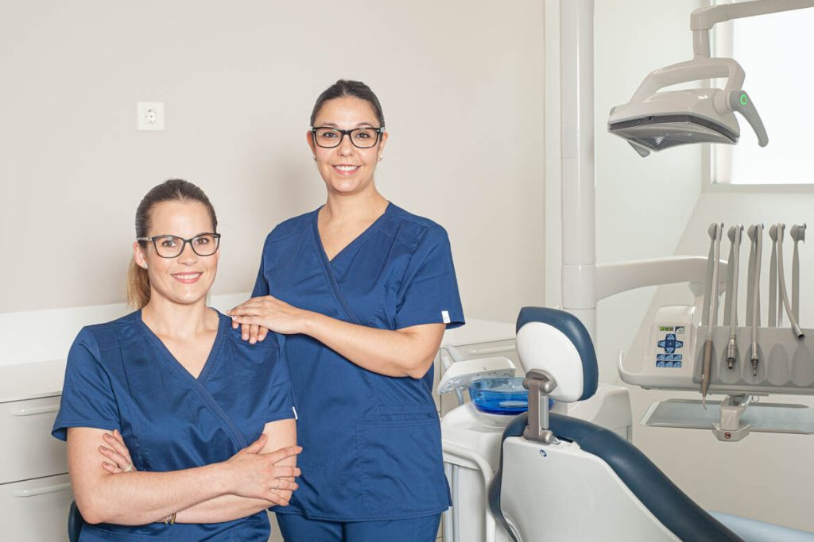
Ortodoncia invisible, lingual, brackets metálicos y estéticos. Certificados Invisalign.
Quiero valorar mi caso →Atención adaptada a pacientes con síndrome de Down, autismo y otras necesidades.
Reservar valoración →Un área pensada para los más pequeños de la casa.
Reservar valoración →Salvamos el diente afectado eliminando el nervio inflamado.
Reservar valoración →Mejora la salud y la estética de tus encías.
Reservar valoración →Quién te va a atender
Varias generaciones de profesionales en formación continua. Cada uno, experto en lo suyo.
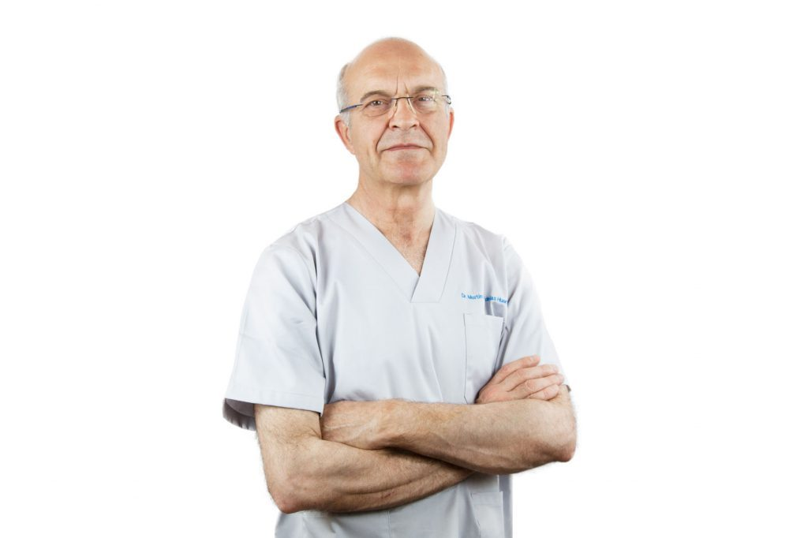
Fundador · Médico estomatólogo
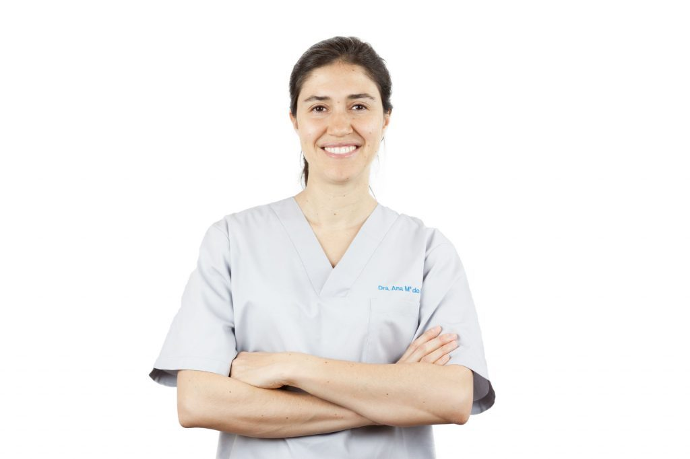
Ortodoncia y Estética
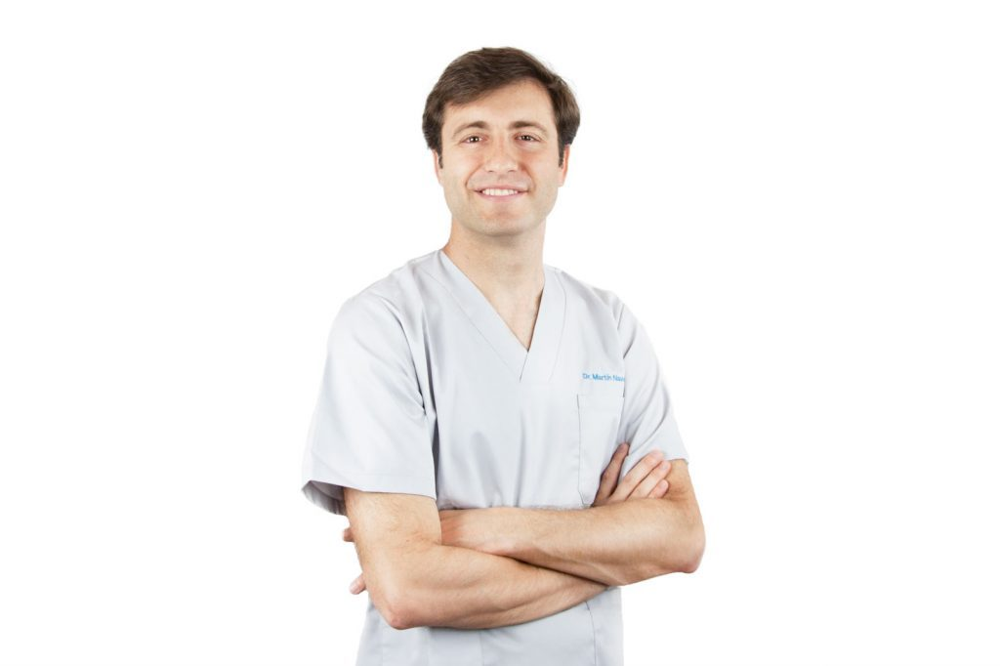
Implantología y Endodoncia
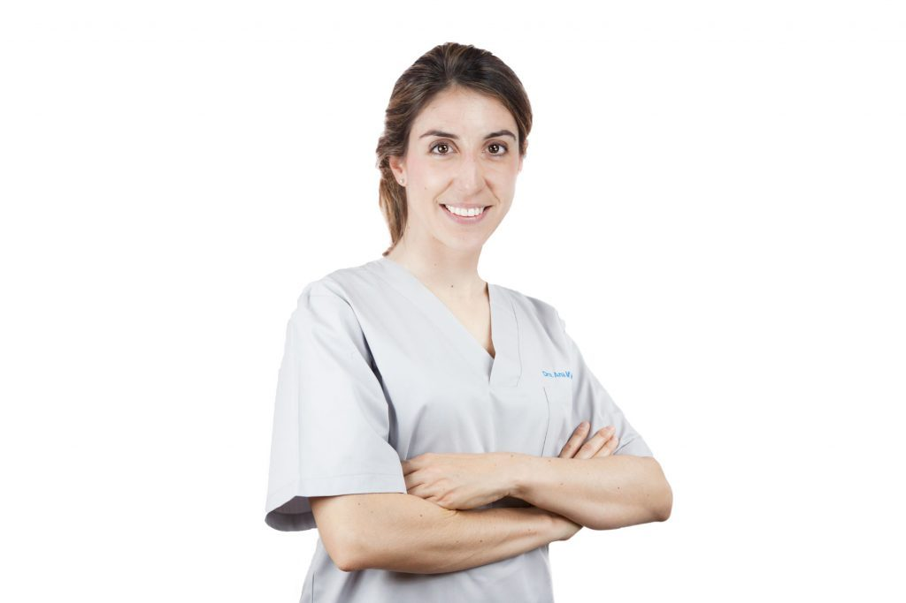
Periodoncia e Implantes
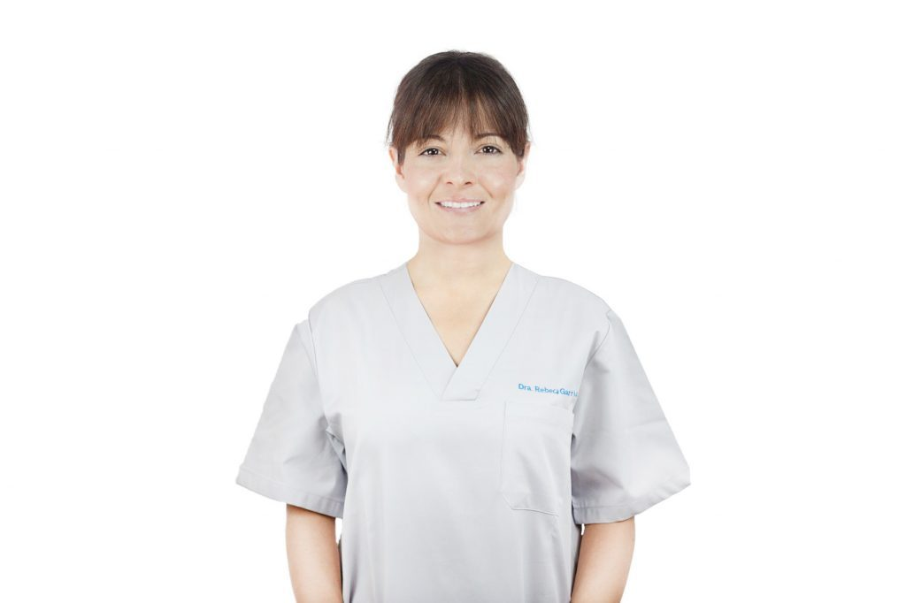
Odontología
Odontología
Así de fácil
Elige día y hora online o llámanos. Te confirmamos la cita por teléfono.
Te atiende el especialista con máster de tu caso y te explica con imágenes qué necesitas.
Te llevas tu plan por escrito con el precio total y la cuota mensual. Sin presión y sin letra pequeña.
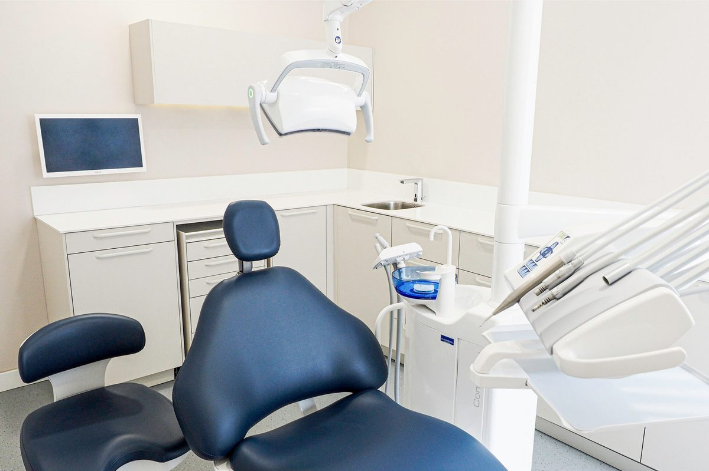
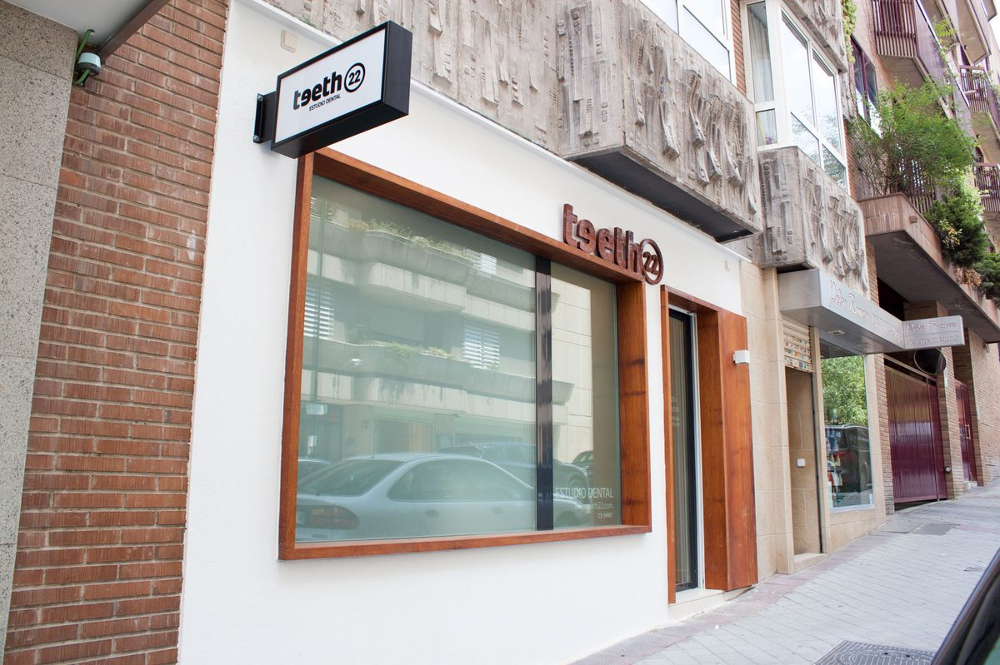
La clínica
Clínica dental moderna y confortable en el barrio de Chamartín, a dos minutos del metro Colombia.
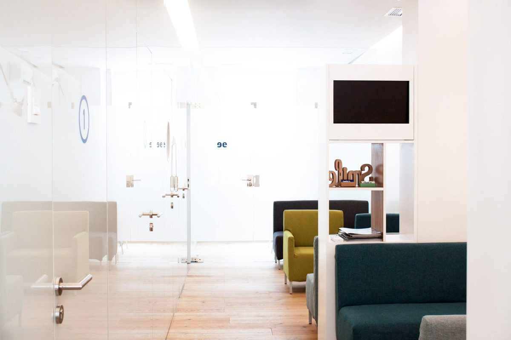
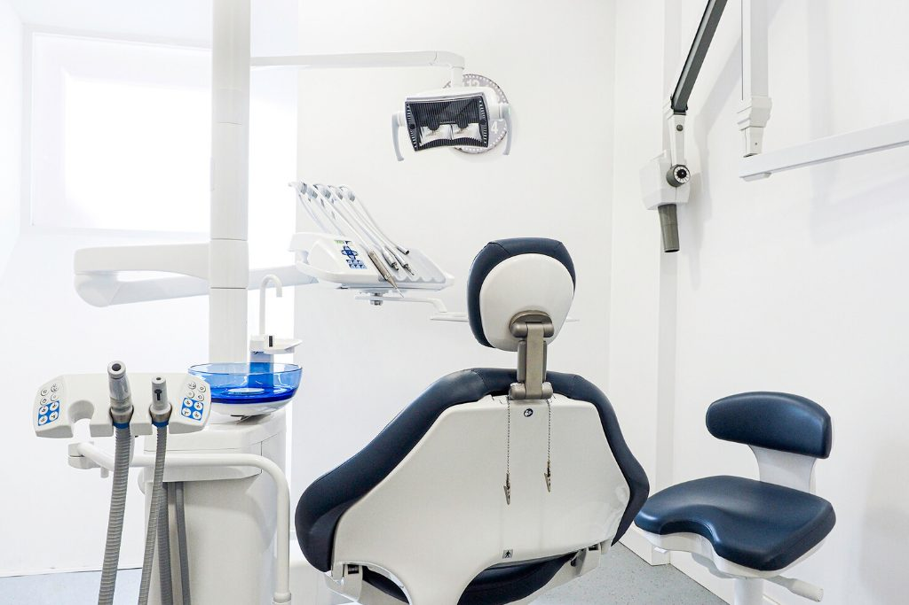
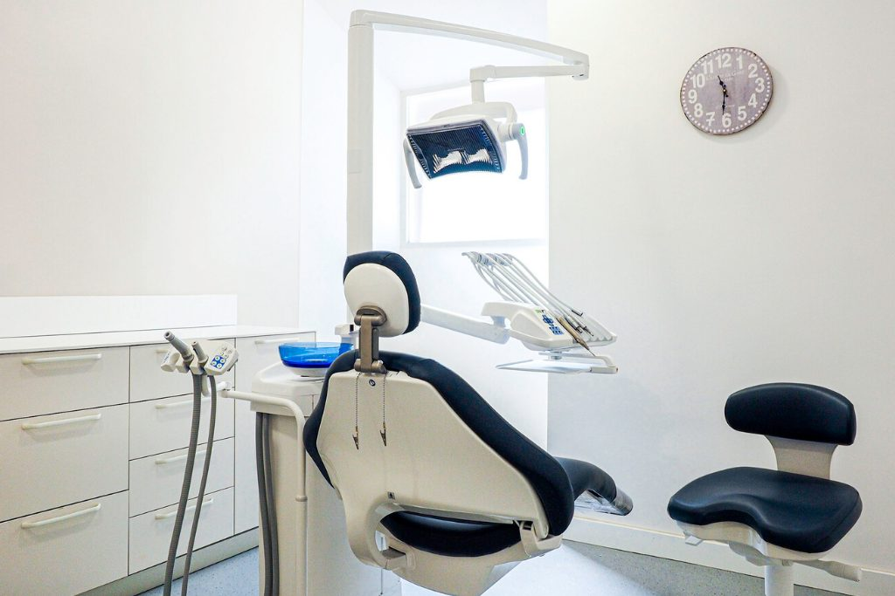
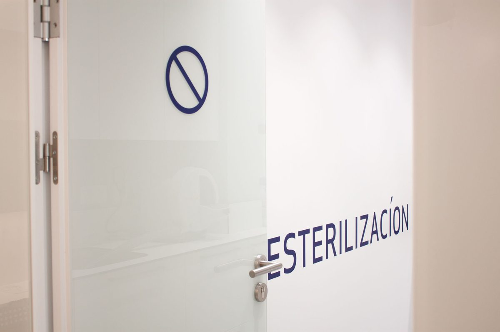
Financiación
Que el dinero no sea la razón para posponer tu salud. Calcula aquí cuánto pagarías al mes y en tu primera visita te damos la cifra exacta.
Financiación sujeta a aprobación de la entidad financiera. Cálculo orientativo sin intereses.
Opiniones
Lee lo que opinan de nosotros en Google antes de venir.
Preguntas frecuentes
¿Tienes otra duda? Llámanos al 91 593 39 66 y te la resolvemos en un minuto.
No hay trampa. Preferimos que nos conozcas sin riesgo: si te gusta cómo trabajamos, te quedarás con nosotros muchos años. Incluye exploración con el especialista de tu caso, radiografía digital y un plan por escrito con precio cerrado.
Sí. Tenemos experiencia con pacientes con síndrome de Down, autismo y otras necesidades. Cuéntanoslo al reservar y preparamos la cita.
Yes, we do. Oui, nous parlons français. Puedes pedir tu cita en el idioma que prefieras.
No. Te llevas tu plan y tu presupuesto por escrito y decides tú, cuando quieras. Sin llamadas insistentes.
Sí. Ofrecemos financiación, sujeta a aprobación. En la primera visita te calculamos tu cuota exacta.
Atendemos con cita previa. Puedes elegir día y hora directamente en esta web y te llamamos para confirmarla.
Reserva online · 1 minuto
Quedan 12 plazas en este mes
Horario: con cita previa
¿Prefieres llamar? 91 593 39 66
Horario online
Horario actualizado en tiempo real (hora de Madrid). Y aunque estemos cerrados, puedes reservar tu cita online las 24 horas: te la confirmamos en cuanto abramos.
Festivos nacionales cerrado. Citas con cita previa.
Dónde estamos
Antes de irte
Visita con el especialista de tu caso, radiografía y plan por escrito por 0 €. Quedan 12 plazas en este mes.
Sí, quiero mi plaza